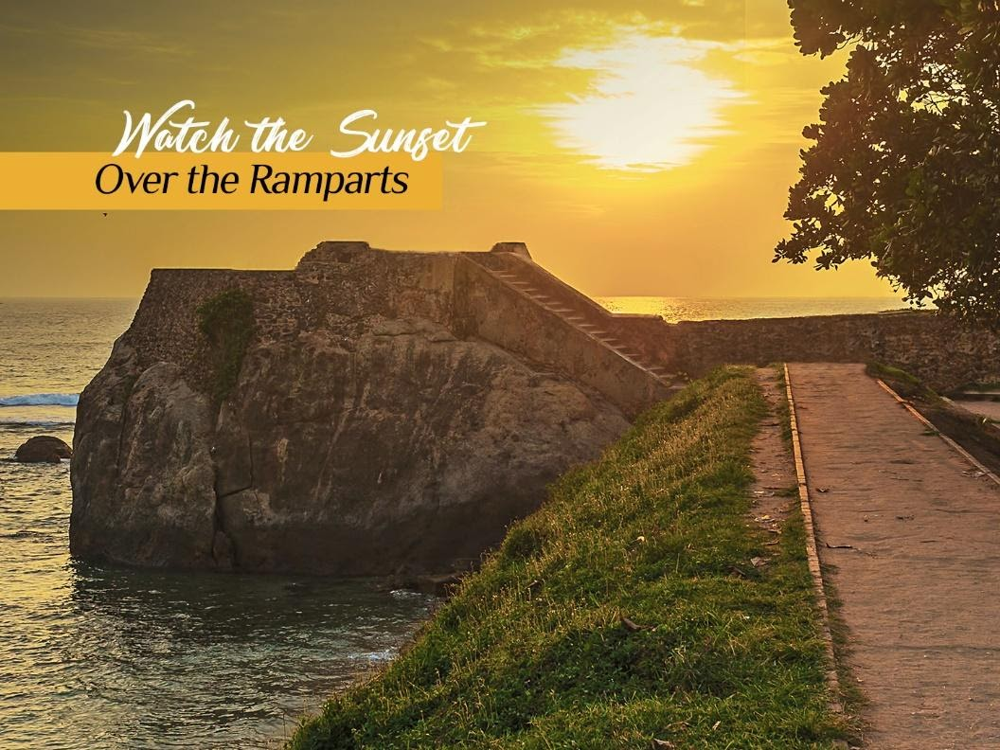
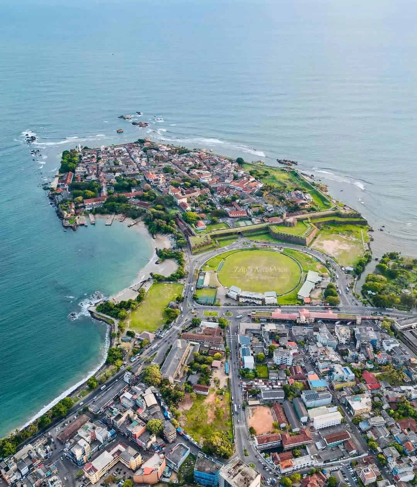
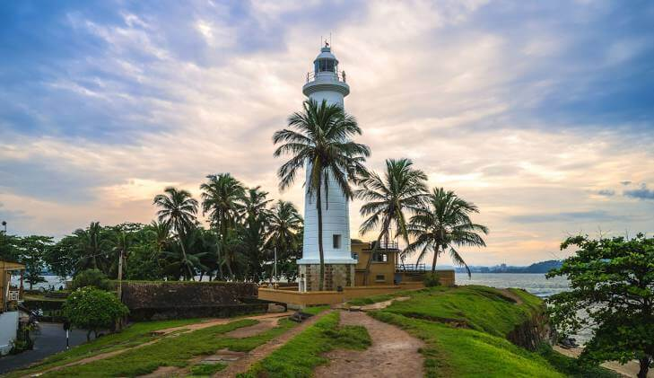
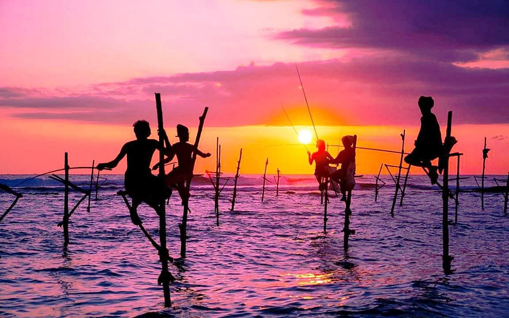
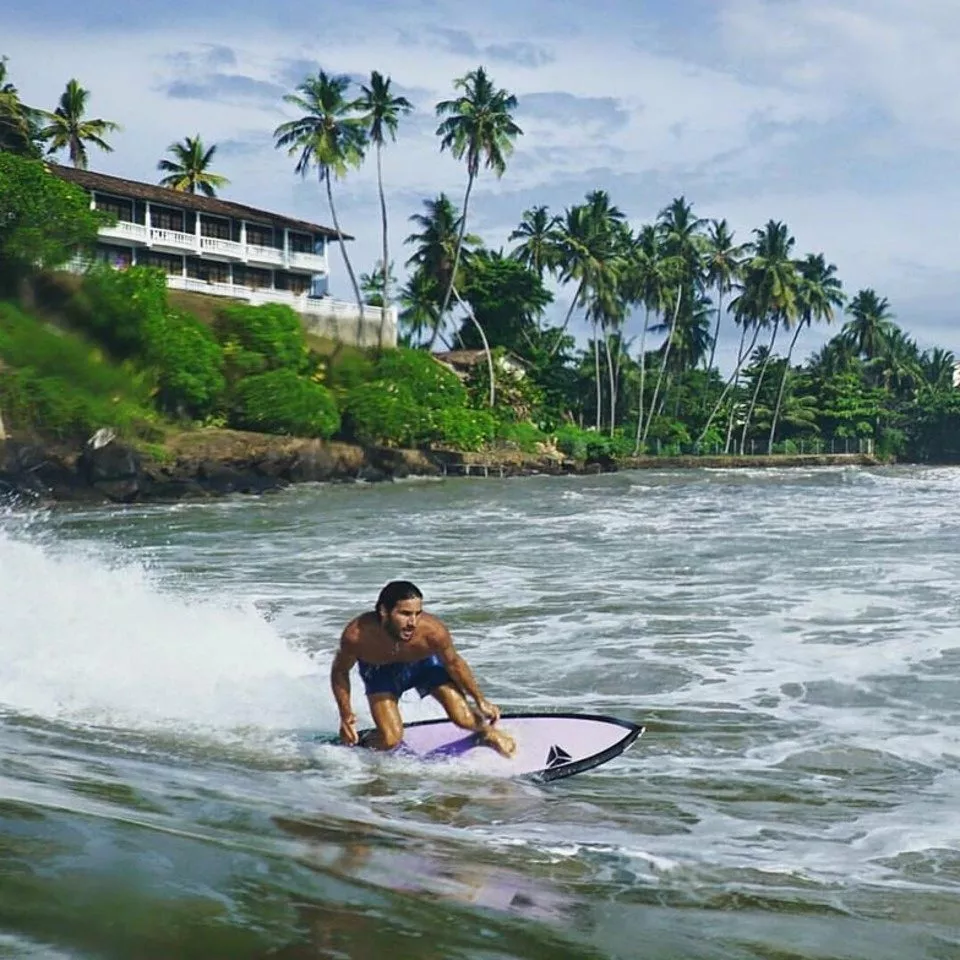

Landmark
Galle Fort Ramparts
A 3 km granite seawall encircling the old town, built by the Dutch on Portuguese foundations.
Southern Province, Sri Lanka
A UNESCO-listed rampart town where Dutch colonial streets meet the tide. Explore Galle's coastline, heritage, and open geospatial data — built for residents, researchers, and visitors.
About the Village
Galle sits where the Southern coastline curls into a natural harbour, guarded since 1588 by a granite fort that has outlasted the Portuguese, the Dutch, and the sea itself. Inside the walls, coral-stone houses and rain trees shade streets that still run to the original 17th-century grid.
Beyond the ramparts, the village widens into stilt-fishing coves, cinnamon gardens, and the reef-lined beaches of Unawatuna — a living coastline this site was built to map and share.

Village Features

A 3 km granite seawall encircling the old town, built by the Dutch on Portuguese foundations.

LandmarkSri Lanka's oldest light station, rebuilt in 1939 at the fort's southeastern point.

Consecrated in 1755, its floor is paved with 17th-century gravestones.

A century-old fishing method still practised along the coast road toward Weligama.
.jpg)
A reef-sheltered bay four kilometres south, framed by a Peace Pagoda on the headland.

a vibrant gateway to the southwest surf coast of Sri Lanka. While the historic Galle Fort itself has no waves due to protective reefs, nearby Dewata Beach functions as the region's premier beginner surf hub, featuring mellow, sand-bottom waves, numerous surf schools, and easy board rentals.
Spatial Data Access
Download boundary layers, heritage-site coordinates, elevation contours, and land-use shapefiles for Galle — free to residents, planners, and researchers.
Community Engagement
Nimal K.
Could the portal add the flood-line data for the fort moat? Useful for our planning module.
Sarah W.
Visited last month — the lighthouse layer helped me plan the whole walk. Thank you!